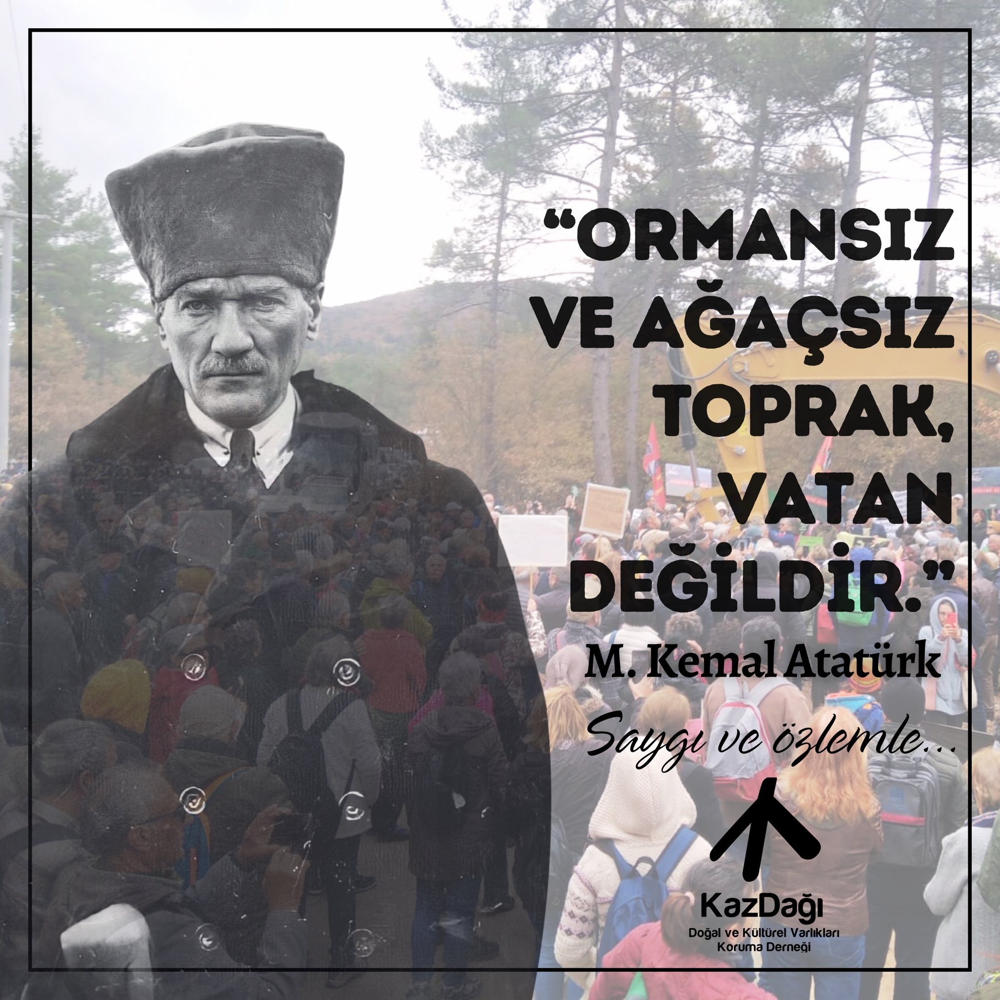

Atatürk, 21 Ağustos 1929'da Bursa'ya gitmek üzere İstanbul'dan Ertuğrul yatıyla yola çıkar. Yalova
sahillerinden geçerken kıyıda muhteşem bir Çınar ağacı görür.
Karaya çıkarak Çınar ağacının yanına
gider,
ağacı okşar, sever ve gölgesinde dinlenir. Çınar ağaçlarına eskiden beri hayran olan Atatürk ağacın
yakınında bir ev yapılmasını ister. Orada kısa sürede bir ev yapılır. Atamız kaplıcalarıyla ünlü Yalova'ya
zaman zaman dinlenmek için geldiğinde o evde kalır. O evi bugün Yalova Atatürk Köşkü adıyla biliyoruz.
Atatürk, evde dinlendiği bir gün, bahçıvanın köşkün yanındaki Çınarın bir dalını kesmeye çalıştığını görür.
Bahçıvanın çalışmasını durdurur ve neden
o dalı kesmek istediğini sorar. Bahçıvan, dalın binanın
duvarına
dayandığını, daha da uzarsa içeri gireceğini söyler. Atatürk bu cevabı beğenmez. Biraz düşünür ve der ki:
Ağacın bu dalı kesilmeyecek, bina kaydırılarak ağaçtan uzaklaştırılacak!
Oradakiler, gerçekleştirilmesi
imkansız gibi görünen bu karar karşısında şaşkına dönerler.
Binanın kaydırılmasını İstanbul Belediyesi yapacaktır. Bu iş için görevlendirilen Başmühendis Ali Galip
Alnar ekibiyle Yalova'ya gelerek çalışmaya başlar.
Önce binanın çevresi temel seviyesine kadar kazılır.
Sonra çelik raylar binanın altına sabırla yerleştirilir.
Bina 3 gün içinde yaklaşık olarak 4,80 metre
kaydırılır. Çalışmaları başında sonuna kadar takip eden Atatürk çok mutlu ve gururludur.
Ağaçları
böylesine
seven Atatürk orada bulunanlarla birlikte keyifle kahvesini yudumlar.
Yalova Atatürk Köşkü bugün müze olarak hizmet vermektedir.
Birgün oraya yolunuz düşerse yukardaki olayı
hatırlayın.
Yıl 1925. Atatürk birgün, Tarım Bakanı Tahsin Coşkan'a, şimdiki Atatürk Orman Çiftliğinin, toprak şartları en berbat bir bölümüne götürür.Orada bir Orman Çiftliği kurmak istediğini belirterek, arazi hakkındaki görüşünü öğrenmek ister. Bakan olumsuz görüş bildirir. Atatürk, araziyi uzmanlara inceletip bir rapor hazırlatmasını ister. Bakanın talimatı üzerine, uzmanlar gerekli incelemeleri yaparak bir rapor hazırlarlar. Rapor da olumsuzdur. Bakan raporu Atatürk'e takdim eder. Atatürk raporu Bakanın yanında okur, gülümser ve raporun altına birşeyler yazıp geri verir. Bakan, tüylerini diken diken eden notu okur. Atatürk oraya şöyle yazmıştır: “Burası vatan toprağıdır ve kaderine terk edilemez
Atatürk'ün çocukluk arkadaşlarından biri olan ve Ankara Belediye Başkanı olarak görev yapan Asaf İlbay,
Gazi'nin ağaçlandırmaya verdiği önemi şöyle anlatmaktadır:
Belediye Başkanı olarak görev yaparken şehir bütçesi kabul edildikten sonra bir gün; şehrin imar planı
hakkında bilgi vermek, bu konuda onun uyarılarını da yerine getirdiğimizi
belirtmek amacıyla Belediye
Meclisi olarak huzuruna çıktık.
Atatürk, kendisine takdim ettiğimiz bütçeyi inceledi.
Sonra “Şehrin ağaçlandırılması için ayrılan
ödenek
başka bir bölümde mi?” diye sordu. Biz şaşırmıştık. Ben: “Bu önemli konuyu ayrı bir iş olarak ele aldık. En
kısa zamanda bu konuda bilgi vereceğim” dedim.
Yanından ayrıldıktan sonra hemen Orman Genel Müdürü Bekir Beyin yanına gittim.
Onun başkanlığında bir
heyet
kurduk. Belediyemizin bütçesinden ödenek ayırdık ve çalışmalara başladık.
Atatürk'ün ağaçlandırmaya verdiği önem sayesinde Ankara'nın
bugün yemyeşil olmasının temelleri o zaman
atılmıştır.
Günümüz insanı bugün çevre sorunlarıyla boğuşurken Atatürk'ün 1930 yılında söylediği şu söz onun ne kadar
ileri görüşlü olduğunu bir daha göstermektedir:
“Çevreyi korumak aklın gereğidir.”
“Yeşil görmeyen gözler renk zevkinden mahrumdur.
Burasını öyle ağaçlandırınız ki, görmeyenler bile
yeşillikler arasında olduğunu anlasın.”
“Ağaç, çiçek ve yeşillik uygarlık demektir.”
“Ormansız ve ağaçsız toprak vatan değildir.”
Bir bozkır kasabası olan Ankara'yı modern bir şehir haline getiren Atatürk, günümüzde çok sözü edilen
"şehircilik" ve "çevre"
kavramlarına o yıllarda yapmış olduğu çalışmalar ve örnek davranışlarıyla ışık
tutmuştur.
Her gittiği yerde ağaçlandırmaya büyük önem veren Atatürk'ün, Ankara'yı çağdaş bir kent olarak görme
arzu ve özlemi, kentin olabildiğince
yeşillendirilmesi çalışmalarını hızlandırmıştır. Bu anlayış
içerisinde Ankara'nın imar planında yapılan değişiklikler ve düzenlemeler, O'nun çevreye
verdiği önemin
ve çevrecilik anlayışının ne derece yüksek seviyede olduğunun birer ispatıdır.
Bunlara örnek olarak;
Atatürk Orman Çiftliği, Gençlik Parkı, Hipodrom ve Ankara caddelerinin ağaçlandırılması çalışmalarını
verebiliriz.
Atatürk'ün doğayı, ağacı sevmesinin en belirgin örneklerinden birisi de kuşkusuz Atatürk Orman
Çiftliği'dir.
Ankara'yı Türkiye Cumhuriyetinin başkenti yapan ve bir bozkır
kasabasında modern bir şehir kuran
Atatürk, bu yönüyle de, günümüzdeki, şehircilik,
çevre ve tabiat güzelliği kavramlarına, 1920'li
yılların şartları içinde ışık tutan bir dehadır. Bu kavramların bilinmediği ve konuşulmadığı o yıllarda,
şehircilik uzmanlarını getirterek,
Cumhuriyetin başkenti Ankara'yı düzene sokan, ağaç diktiren,
bulvarlar açtıran, Çiftliği
kuran, sefaret bahçelerinde yeşilliğe imkan veren Atatürk, diğer yönleriyle
olduğu gibi, bu yönüyle de her zaman örnek alınması gereken eşsiz büyük bir önderdir.
Atatürk'ün kişiliğini oluşturan etkenler arasında bitki
ve hayvan sevgisinin de önemli bir yeri
bulunmaktadır. Atatürk, yaşamının son günlerinde
de yeşillikler arasında olma özlemini duymuştur.
Yeşilliği olduğu kadar barışı da seven Atatürk'ün Anıtkabiri'ne dünya uluslarının gönderdikleri
fidanlarla meydana gelen Barış Parkı, ölümünden sonra da Ata'nın
kişiliğiyle bütünleşmiştir.